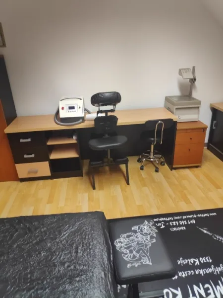

Vprašanja smo zapisali mi. Vsi odgovori studia so dobesedni navedki s tattoo-pigment.com, pod vsakim je stran, s katere je. Besedilo, ki je na njihovi strani v samih velikih črkah, je prepisano v male.
Kaj delate
Živjo! Kaj pravzaprav delate?
Kulturno umetniško društvo Tattoo Pigment Kočevje se ukvarja z izdelavo tetovaž ter širjenjem kulture umetnosti tetoviranja.
Ponujamo vam tudi izdelavo zidnih poslikav.
Lahko vidim kakšno delo?
-


Iz galerije: tattoo-pigment.com/tattoos.php
Ali lahko prekrijete staro tetovažo?
-

Napis fotografije v njihovi galeriji: »prekrivanje 6 (cover up)«
Sterilizacija
Kako poteka sterilizacija?
Sterilizacija poteka pod skrbno urejenimi pogoji.
Sterilizirajo se vsi jekleni deli (316 kirurško jeklo) pištole za tetovirati in ostalih instrumentov ki se jih uporablja pri tetoviranju, razen igel, ki so samo za enkratno uporabo in se sterilizirajo samo pred uporabo.
Po končanem tetoviranju se uporabljeno iglo odvrže.
S čim sterilizirate?
Pri postopku sterilizacije uporabljam ultra zvočni čistilec in avtoklav. Avtoklav je komora v kateri poteka parna sterilizacija pod visoko temperaturo (126 °C) in visokim tlakom (3 bari).
Če vas karkoli zanima o steriliziranju, vprašajte tattooatorja in z veseljem vam bo vse razložil […]
Ne tetovirajte se pri ljudeh za katere dvomite v njihovo higieno!
Nega
Kako negujem novo tetovažo?
Po končanem tetoviranju vam tattooator razloži kako morate naslednjih 10 do 15 dni skrbeti za nego tetovaže.
Po treh urah odstranite folijo, in površino tattooja ter njegovo okolico nežno umijte z mlačno vodo (čista brisača namočena v mlačno vodo). Ne drgni! Popivnaj!
Tattooja ne praskajte z nohti ali ostrimi predmeti, ne trgajte hrast, ker morajo odpasti same.
Se lahko tuširam? Kaj pa sonce?
Dokler se tattoo popolnoma ne zaceli, se izogibajte direktne sončne svetlobe in vode. (Izjema je hitro tuširanje, in ne namakanje v banji)
Nosite lahka oblačila če je tattoo pod obleko!
Ob upoštevanju navodil se vam bo tattoo lepo zacelil in bo pripravljen na ''razkazovanje'' prijateljem.
Termin
Kje vas najdem?
Ljubljanska cesta 19, 1330 Kočevje (nad trgovino SANOLABOR).
-

Studio, s strani studio.php
Kdaj imate odprto in koliko stane?
- Delovnega časa in cen na njihovi strani ni, zato jih tudi tu ne pišemo. To ve Jure.
Če vas karkoli od navedenega zanima nas kontaktirajte na 041 560 623 (Jure) ali nam pišite na tattoopigment@gmail.com […]
Odgovorite Juretu
Pokliči Jureta041 560 623- E-pošta
- tattoopigment@gmail.com
- @tattoopigment
- Naslov
- Ljubljanska cesta 19, Kočevje · zemljevid